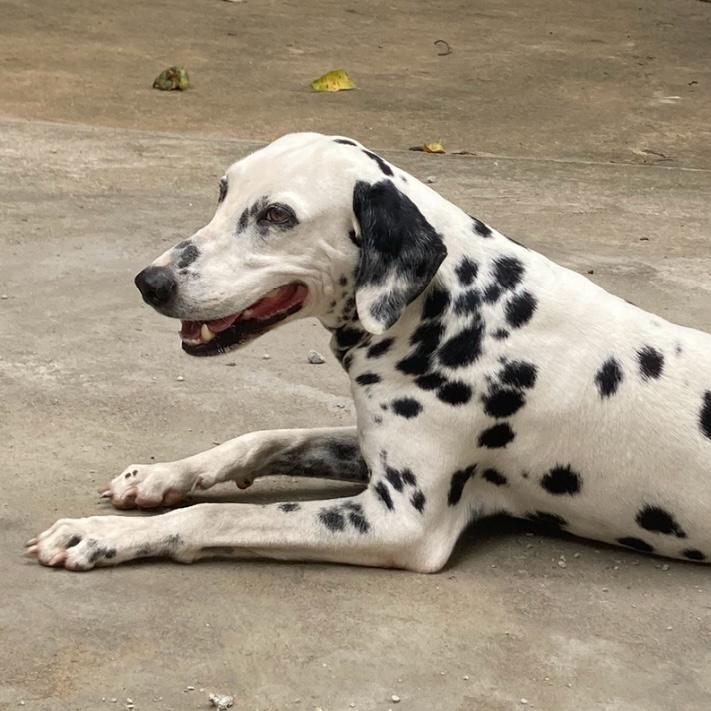

Milena Sanson Wasconcellos - Landing Page

Um pouco sobre minha vida acadêmica:
Eu estudei no Centro de Ensino Charles Darwin, em Vila Velha, por 11 anos, e concluí o Ensino Médio em 2025. Sempre gostei muito de tecnologia então resolvi cursar Ciência da Computação na UVV, que era a faculdade que eu queria estudar desde sempre.
Como estou no primeiro período, ainda não tenho certeza da área que quero atuar profissionalmente, mas, atualmente, tenho me interessado muito por design e cibersegurança. Ah, e não vejo a hora de aprender a desenvolver games!
Matérias que estou cursando atualmente na faculdade:
- Construção de Software para Web
- Design e Desenvolvimento de Banco de Dados
- Experiência e Interface com o Usuário (minha matéria favorita, #SusileaMeContrata :D)
- Fundamentos de Ciência da Computação
- Lógica para Computação
Hobbies
Gosto de editar vídeos, ouvir música, andar no shopping e assistir minhas séries/filmes favoritos.
A cena final do meu filme favorito (momento épico!)
Jurassic World - 2015
Um pouco mais sobre mim :)
Como o maravilhoso professor Fabrício nos ensinou a adicionar emojis na nossa página...
Aqui estão os meus emojis favoritos:
🥳 - Uso sempre que estou feliz
🍣 - Sushi é a melhor comida do mundo
🎄 - Natal é a melhor época do ano (mais especificamente a véspera de natal, no dia 24)
🫶 - Uso esse emoji sempre
🌻 - Minha flor favorita
💗 - Meu emoji de coração favorito
🦦 - Infelizmente esse aqui fica meio feio nessa página, mas é um emoji de lontra boiando na água (caso esteja difícil de entender). Acho ele super fofo.
Minha companhia favorita:

Esse é o meu cachorro, Sonho. Ele tem 9 anos e ama correr.
Minha música favorita
Smells Like Teen Spirit - Nirvana
Caso tenha gostado de mim, não se esqueça de dar uma olhada nos meus serviços!